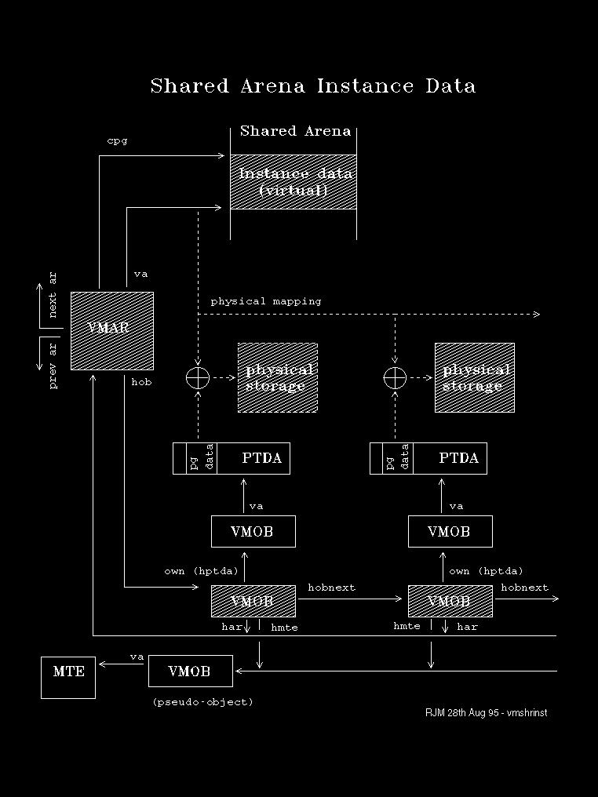

A DLL Instance data allocation shares only its address range among its accessors. The data is mapped to a different set of physical pages for each process.
This type of allocation is represented by a single VMAR with a chained list of VMOBs, one for each accessor. This is the only case where VMOBs are linked by the hobnxt field.
The following diagram depicts this situation.
Control blocks and data that directly represent the allocation are shown shaded. 